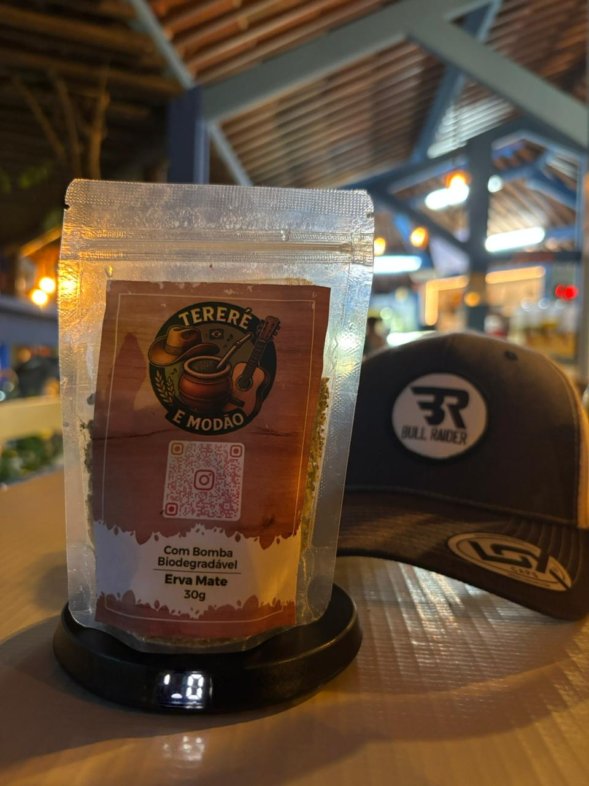
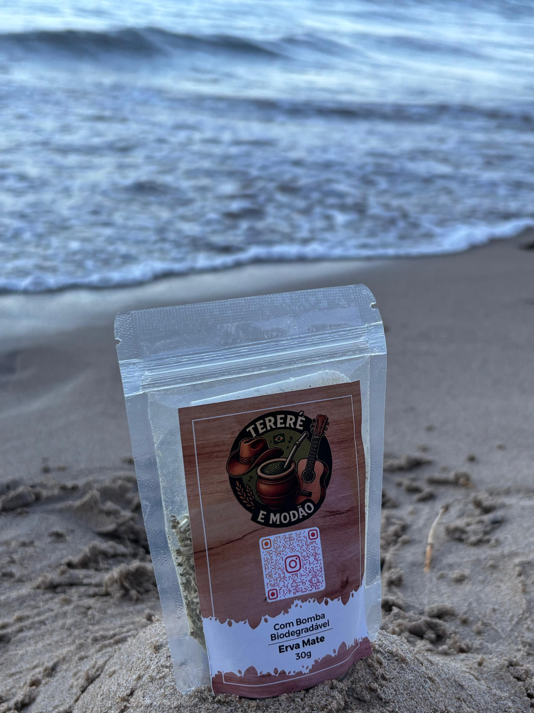
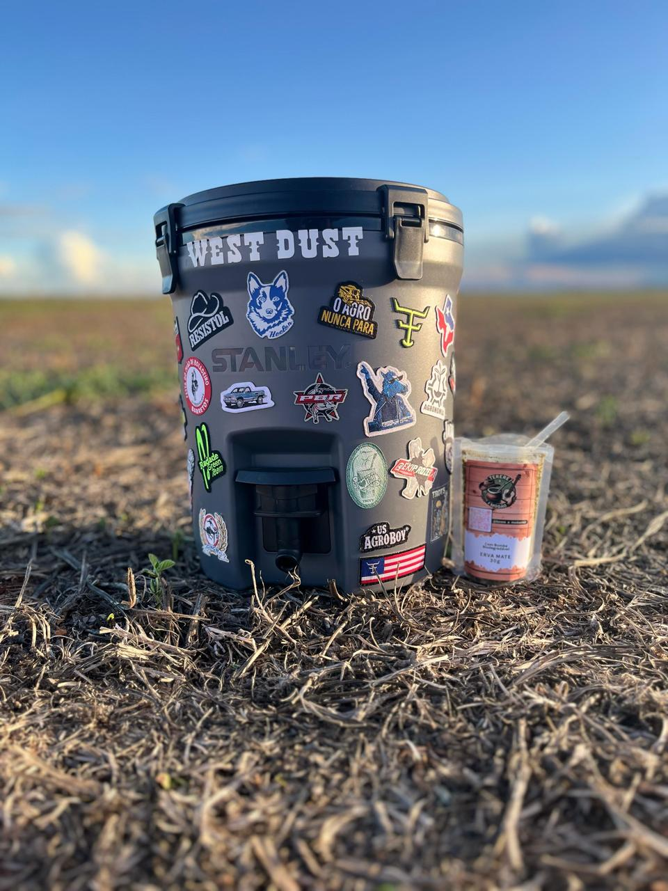

Água Fria de Goiás - GO
Entrega e retirada
Tereré e Modão
Sabor, praticidade e personalidade em cada pacote.
Erva Mate 30g com bomba biodegradável, pensada para quem curte um tereré bem gelado, com visual marcante e uma experiência simples de pedir pelo WhatsApp.
- Bomba biodegradável
- Erva Mate 30g
- Ideal para levar no dia a dia

A partir de
R$ 9,50
Por que escolher
Um produto pensado para vender bem e agradar quem compra
O Tereré e Modão une apresentação bonita, praticidade no consumo e sabores que combinam com o clima, a rotina e a resenha.

O que vem no pacote
O essencial para uma experiência prática e marcante
Cada unidade foi apresentada de forma simples e bonita, ideal para quem quer experimentar, vender, presentear ou levar para qualquer lugar.
Valor atual informado
R$ 9,50
Consulte disponibilidade de sabores no WhatsApp
Sabores disponíveis
Escolha o sabor que combina com o seu momento
A proposta mistura opção tradicional com sabores refrescantes e marcantes. Se algum sabor acabar, é só confirmar no WhatsApp antes de fechar o pedido.
Como usar
Passo a passo simples para apresentar no site
Esta seção ajuda quem está chegando agora a entender rápido a proposta do produto.
Galeria
Fotos reais para valorizar o produto
As imagens ajudam a vender a experiência. Aqui o produto aparece em destaque, no campo e na praia.

Dúvidas frequentes
Respostas rápidas para reduzir dúvidas e aumentar a conversão
Preço, sabores, entrega, retirada e pedido no WhatsApp são os pontos mais importantes para o visitante.
Pedido rápido
Escolha seu sabor e fale agora pelo WhatsApp
Atendimento com entrega e retirada em Água Fria de Goiás - GO. Confirme sabor, quantidade e condições direto pelo atendimento.
Contato
Fale com a marca e combine seu pedido
Use o WhatsApp para pedir, tirar dúvidas, confirmar sabores e alinhar entrega ou retirada.
Espaço pronto para seus prints e provas sociais
Como os prints do Instagram ainda não foram adicionados, esta área ficou preparada para receber bio, destaques, depoimentos e publicações reais da marca.
Substitua aqui por um print real com @, descrição e link da bio.
Use um print de foto, promoção, sabores disponíveis ou bastidor.
Inclua avaliação real, feedback de cliente ou print de conversa autorizada.